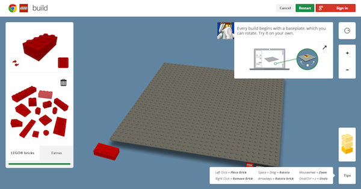
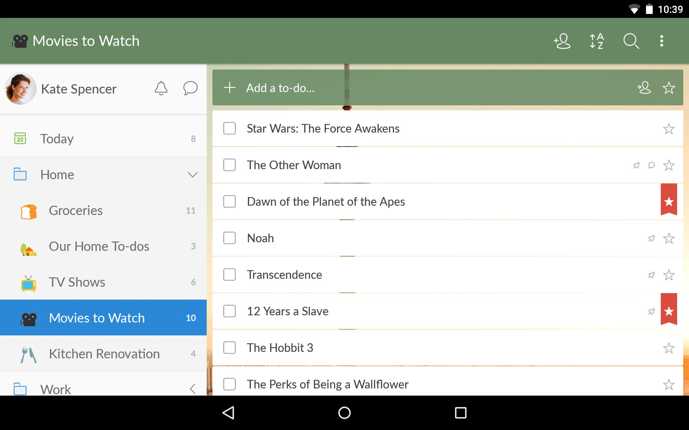
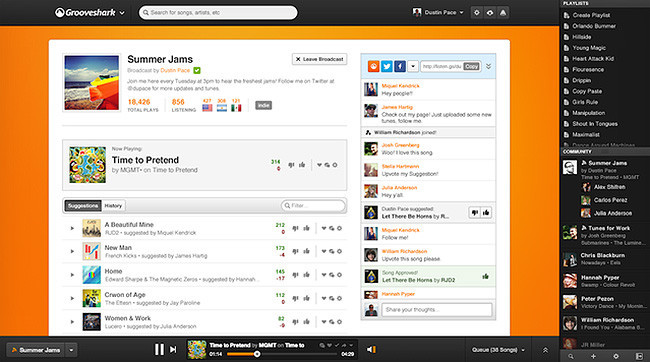

- Build with Google: LEGO en tu navegador
- Appear.in: videoconferencias sin necesidad de plugins
- Wunderlist: un completo gestor de tareas en tu navegador, incluso offline
- Grooveshark: música sin necesidad de otro reproductor
- Picozu: editando fotografías desde tu navegador, sin complementos
Seguro que muchos de vosotros habéis utilizado mucho tiempo en vuestra infancia para construir estructuras utilizando piezas de LEGO. Esa experiencia se ha trasladado con bastante acierto a la era digital, haciendo uso de HTML5 y WebGL. El experimento se llama Build with Chrome.De la mano de Google y con motivo del lanzamiento de "LEGO, la película", fue lanzada una aplicación Web que teóricamente funciona en todos los navegadores y que nos permite construir fácilmente este tipo de estructuras. Por supuesto es totalmente gratuita.
Si tenemos un navegador moderno, una webcam, un micrófono y unos altavoces o auriculares que nos permitan escuchar y hablar, basta con utilizar Appear.in para montar una videoconferencia casual en cuestión de minutos. ¿Cómo? Gracias a la magia de WebRTC, otra tecnología anexa a HTML5 y que permite mantener comunicaciones en tiempo real.
No utiliza ningún complemento ni tecnologías propietarias: simplemente utiliza un estándar existente, abierto y diseñado especialmente para ello. Appear.in permite realizar videoconferencias de hasta ocho personas sin necesidad siquiera de abrir una cuenta en su servicio.
Muchos de vosotros seguro que conocéis Wunderlist, el magnífico producto de 6wunderkinder que está presente en muchas plataformas. Incluyendo, por supuesto, cualquiera que tenga acceso a un navegador mínimamente moderno.
Lo que mucha gente no sabe es que esta aplicación Web (basada, por supuesto, en una serie de características parte de HTML5) está preparada para funcionar en nuestro navegador incluso cuando no tenemos conexión a Internet, sincronizando los cambios tan pronto recupere conectividad con sus servidores. De hecho, un tip: es capaz de funcionar incluso en el navegador de nuestro móvil. Probadlo.
Si ahora mismo accedéis a Grooveshark sin tener instalado ningún plugin os dirá que necesita Flash. Aunque también os avisará de que en estos momentos están desarrollando un cliente que únicamente utiliza HTML5 y sus características (particularmente la etiqueta
Podéis probarlo para comprobar que, si queréis escuchar música, no necesitáis otra aplicación. Con vuestro navegador, sin complementos, os vale. Recordad que es una beta: puede que no todo funcione como debe.
Imaginad la situación: necesitamos editar rápidamente una imagen y no estamos en un ordenador que disponga de una aplicación de este tipo. Si tenemos un navegador suficientemente moderno, Picozu puede hacernos el apaño. Se trata de un completo editor gráfico que no necesita ningún tipo de complemento para funcionar dentro de nuestro navegador.
Lo único que conviene es que dispongamos de recursos de hardware: este tipo de aplicaciones dan caña a nuestra máquina y probablemente si no disponéis de una CPU rápida y suficiente memoria RAM no tengáis una buena experiencia de usuario. Por lo demás, el editor es gratuito y para probarlo únicamente debéis acceder a la página correspondiente.